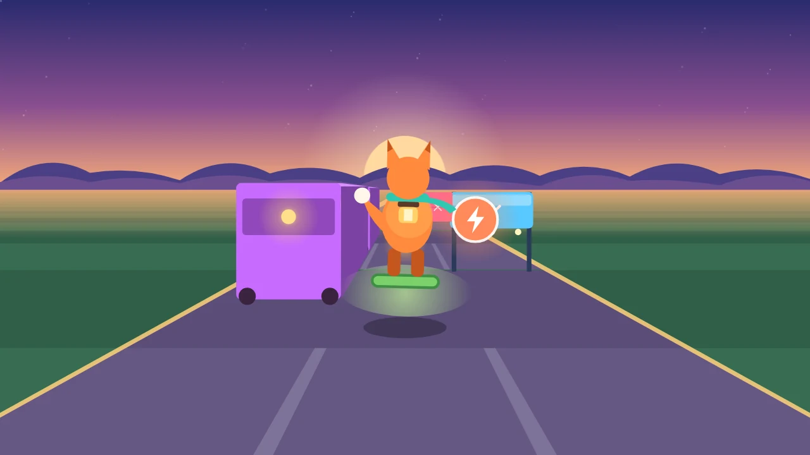

Hexan.js — FPSA subscription is required to play. Subscribe to play
No downloads or plugins. Direct browser execution.Scamperlight
Swipe to dodge, jump and slide as Fen the lamplighter fox-kit scampers down glowing lanes through five dusky biomes. How far can you run?
Scamperlight is a bright, fast three-lane endless runner. You are Fen, a lamplighter fox-kit riding a hover-leaf down the lantern lanes at dusk. Swipe left or right to change lane, swipe up to jump and swipe down to slide. You can also tap the left or right half of the screen to steer, or play with the arrow keys, WASD and Space on a keyboard. The road keeps speeding up, smoothly, the further you get.
Every obstacle has its own colour in every biome, so you can read the road at a glance: hop the amber fences, slide under the blue lantern beams, and dodge the rose blocks and the long violet carts. Warning strips light up on the road before each obstacle row, and every row of the course is checked by a solver so there is always a way through that a quick reaction can reach. A last-moment dodge, jump or slide counts as a near miss and is worth bonus points.
Collect glow motes along the safest line; chaining them plays a rising run of notes. Three power-ups help you out: the Magnet pulls nearby motes in, the Shield absorbs one crash, and the Boost launches you forward and smashes through anything in your way, with speed lines and a louder soundtrack. The world changes as you go, from Dusk Meadow to Amber Canyon, Frostwood, the Starfall Ruins and Aurora Lake, with distance milestones along the way. The music grows with you as new layers join.
Scoring is explained before you play and on every results screen: one point per metre, five per glow mote, 25 per near miss and 100 per distance milestone. Endless mode keeps your best distance and score. 24 Trails each have three stars: reach the lantern gate, collect a number of motes, and a style goal such as near misses, using power-ups or a no-hit run. The goal card explains them, the HUD shows live progress and the results screen waits for you and never moves on by itself. The Daily Run gives every player the same course each day, with your best and a day streak. Share a result card and a challenge link: your friend runs the exact same course with a ghost marker showing the distance to beat. Motes and stars unlock new runners and boards. Everything works offline and your progress is saved on your device.